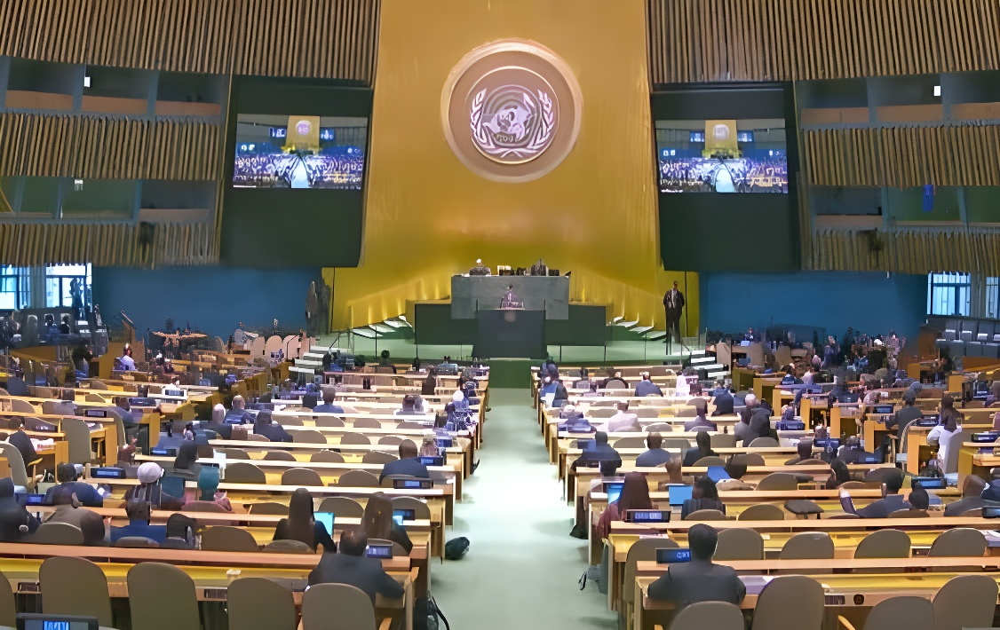

Le 8 septembre 2026, l'Assemblée générale des Nations unies a ouvert sa 81ᵉ session à New York, sous la présidence du chef de la diplomatie bangladaise Khalilur Rahman. Pendant la semaine de haut niveau, près de 130 chefs d'État et de gouvernement se sont succédé à la tribune du débat général, sur fond de crise financière inédite pour l'Organisation, de course à la succession d'António Guterres et de vives tensions autour de l'Iran et de Gaza.
La 81ᵉ session de l'Assemblée générale des Nations unies s'est officiellement ouverte le mardi 8 septembre 2026, sous la présidence de Khalilur Rahman, ministre des Affaires étrangères du Bangladesh. Principal organe où les 193 États membres de l'ONU discutent des grands sujets internationaux, l'Assemblée s'est réunie cette année sous le thème « Rétablir la confiance, gérer la transformation : une Organisation des Nations unies au service de tous », un intitulé qui résume les ambitions et les difficultés de l'institution en cette rentrée.
La semaine de haut niveau, temps fort de la session, s'est déroulée du 22 au 28 septembre et a rassemblé près de 130 chefs d'État et de gouvernement à la tribune du débat général. Climat, développement, gouvernance de l'intelligence artificielle, sécurité sanitaire, paix et sécurité : l'agenda de cette édition a couvert l'ensemble des dossiers qui traversent, en 2026, une actualité internationale particulièrement dense.
« C'est un spectacle qui nous fait honte à tous. »
— Emmanuel Macron, président de la République française, tribune de l'ONU, 22 septembre 2026Ouverture officielle de la 81ᵉ session par le nouveau président Khalilur Rahman.
« Moment ODD », consacré au bilan des objectifs de développement durable.
Ouverture du débat général : discours de Donald Trump et d'Emmanuel Macron.
Réunion de haut niveau sur l'action climatique et la transition juste.
Réunion de haut niveau sur la prévention et la riposte face aux pandémies.
Clôture du débat général, marquée par le 25ᵉ anniversaire de la Déclaration de Durban.
La session s'ouvre alors que l'ONU sort d'une négociation budgétaire particulièrement tendue. Fin décembre 2025, l'Assemblée générale a approuvé un budget ordinaire de 3,45 milliards de dollars pour 2026, en baisse d'environ 7 % par rapport à 2025, dans le cadre de l'initiative de réforme « ONU80 » lancée par le secrétaire général. Cet arbitrage s'est traduit par la suppression de plusieurs milliers de postes, alors que les arriérés de contributions des États membres dépassaient 1,6 milliard de dollars fin 2025.
Devant la Cinquième Commission chargée des finances de l'Organisation, António Guterres avait averti que l'institution restait exposée à un risque de faillite tant que les cotisations ne seraient pas versées intégralement et à temps par l'ensemble des États membres, au premier rang desquels les États-Unis, principal contributeur financier de l'ONU.
Le mandat d'António Guterres s'achève le 31 décembre 2026. Huit personnalités — cinq femmes et trois hommes — se sont déclarées candidates au poste de dixième secrétaire général : parmi elles, l'Argentin Rafael Grossi, directeur général de l'AIEA et donné favori par plusieurs diplomates, la Costaricaine Rebeca Grynspan, la Chilienne Michelle Bachelet, le Sénégalais Macky Sall, ainsi que quatre autres candidatures venues d'Équateur, du Guyana et d'Ouganda. La règle non écrite de rotation régionale désigne cette année l'Amérique latine, ce qui explique le nombre de candidats issus de cette région.
| Événement | Date | Ce qu'il révèle |
|---|---|---|
| Ouverture de la 81ᵉ session | 8 sept. 2026 | Nouvelle présidence bangladaise de l'Assemblée |
| Discours de Donald Trump | 22 sept. 2026 | Menace envers l'Iran, accord sur le Groenland |
| Discours d'Emmanuel Macron | 22 sept. 2026 | Critique de la situation humanitaire à Gaza |
| Adoption du budget 2026 | 30 déc. 2025 | 3,45 Md$, -7 % et suppressions de postes |
« L'ONU est confrontée à un risque de faillite. »
— António Guterres, secrétaire général de l'ONU, octobre 2025Cette 81ᵉ session résume à elle seule les contradictions que traverse l'ONU : une institution affaiblie par des années de coupes budgétaires, appelée à se choisir un nouveau visage au moment même où les grandes puissances peinent à s'accorder sur l'essentiel, de l'Iran à Gaza en passant par l'Ukraine. Quel que soit le nom retenu pour succéder à António Guterres en janvier 2027, la future direction de l'Organisation héritera d'une maison aux moyens resserrés mais à l'agenda inchangé — signe que la confiance évoquée par le thème de cette année reste, avant tout, à reconstruire.
On September 8, 2026, the United Nations General Assembly opened its 81st session in New York, presided over by Bangladesh's foreign minister, Khalilur Rahman. During the High-Level Week, nearly 130 heads of state and government took the podium for the General Debate, against a backdrop of an unprecedented financial crisis for the Organization, a race to succeed António Guterres, and mounting tensions over Iran and Gaza.
The 81st session of the UN General Assembly formally opened on Tuesday, September 8, 2026, presided over by Khalilur Rahman, Bangladesh's foreign minister. As the main forum where the UN's 193 member states discuss global issues, the Assembly convened this year under the theme "Restoring Trust, Managing Transformation: A United Nations That Delivers for All" — a title that sums up both the ambitions and the struggles facing the institution.
The High-Level Week, the session's centerpiece, ran from September 22 to 28 and brought together nearly 130 heads of state and government at the General Debate podium. Climate, development, AI governance, health security, peace and security: this year's agenda covered the full range of issues shaping a particularly dense international news cycle in 2026.
"It is a spectacle that shames us all."
— Emmanuel Macron, President of France, UN General Assembly, September 22, 2026Official opening of the 81st session by new President Khalilur Rahman.
"SDG Moment," reviewing progress on the Sustainable Development Goals.
Opening of the General Debate: addresses by Donald Trump and Emmanuel Macron.
High-level meeting on climate action and a just transition.
High-level meeting on pandemic prevention, preparedness and response.
Close of the General Debate, marked by the 25th anniversary of the Durban Declaration.
The session opened just after the UN emerged from a particularly tense budget negotiation. In late December 2025, the General Assembly approved a $3.45 billion regular budget for 2026, roughly 7% lower than in 2025, under the "UN80" reform initiative launched by the Secretary-General. The deal came with the elimination of thousands of posts, while member states' unpaid contributions topped $1.6 billion at the end of 2025.
Addressing the Fifth Committee, which handles the Organization's finances, António Guterres warned that the UN remained exposed to a risk of bankruptcy unless all member states paid their dues in full and on time — starting with the United States, the Organization's largest financial contributor.
Guterres's term ends on December 31, 2026. Eight candidates — five women and three men — have declared their bids to become the tenth Secretary-General: among them, Argentina's Rafael Grossi, head of the IAEA and widely seen as the frontrunner by several diplomats, Costa Rica's Rebeca Grynspan, Chile's Michelle Bachelet, Senegal's Macky Sall, and four further candidates from Ecuador, Guyana and Uganda. This year's unwritten rule of regional rotation points to Latin America, which explains the large number of candidates from the region.
| Event | Date | What it shows |
|---|---|---|
| Opening of the 81st session | Sept. 8, 2026 | New Bangladeshi presidency of the Assembly |
| Trump's address | Sept. 22, 2026 | Threat toward Iran, Greenland agreement |
| Macron's address | Sept. 22, 2026 | Criticism of the humanitarian situation in Gaza |
| 2026 budget adopted | Dec. 30, 2025 | $3.45B, down 7%, with post cuts |
"The UN is facing a risk of bankruptcy."
— António Guterres, UN Secretary-General, October 2025This 81st session captures, on its own, the contradictions the UN is navigating: an institution weakened by years of budget cuts, tasked with choosing a new leader just as major powers struggle to agree on the essentials, from Iran to Gaza to Ukraine. Whoever succeeds António Guterres in January 2027 will inherit an organization with tighter resources but an unchanged agenda — a sign that the trust invoked by this year's theme still has to be rebuilt.